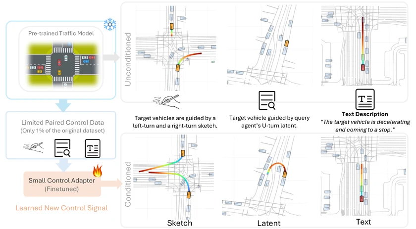
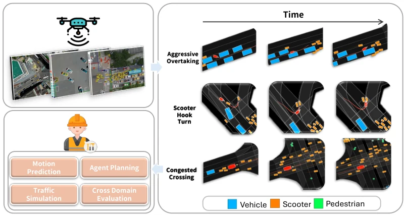
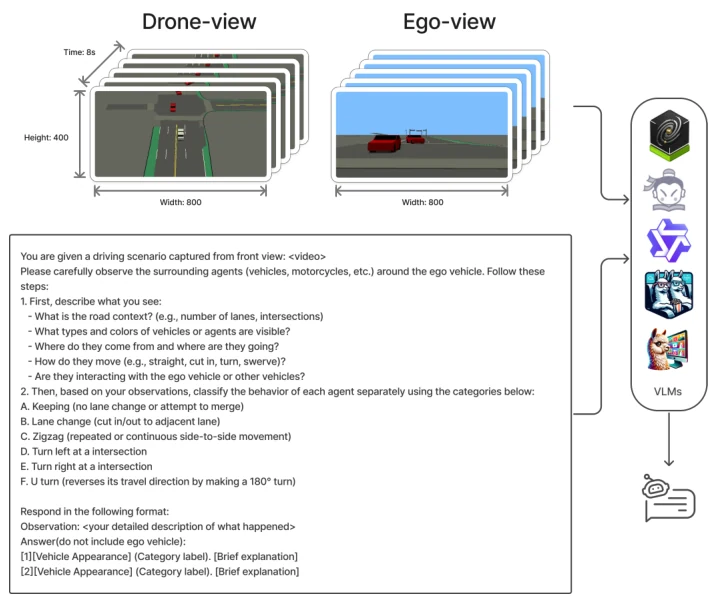

I am a research intern at Synology. I received my master's degree in Computer Science from National Yang Ming Chiao Tung University (NYCU), where I was advised by Prof. Yi-Ting Chen. Previously, I was a visiting researcher at UC Berkeley's MSC Lab, working with Prof. Masayoshi Tomizuka.
I study how autonomous systems can learn efficiently and remain robust in unfamiliar situations. My work spans datasets and benchmarks, controllable generative models, and efficient adaptation of multimodal models. I aim to link these directions in a learning loop that identifies gaps in experience, generates targeted counterfactuals, and learns from failures. My work includes first-author papers at ECCV and ICRA, as well as contributions to workshops at CVPR, ICCV, and ECCV.
I am seeking Fall 2027 PhD opportunities and welcome research collaborations.
News
- Organized the first Heterogeneous Traffic Simulation Challenge at the ECCV 2026 DriveX Workshop.
- Co-organized the DriveX Workshop at ECCV 2026.
- Gave a talk on heterogeneous traffic at the X-Sense Tutorial at ECCV 2026.
- Placed 1st in the Ablation Track and earned Runner-up honors in the Full Multimodal End-to-End Track of the CVPR doScenes Challenge.
- ECoSim accepted to ECCV 2026.
- HetroD accepted to ICRA 2026.
Publications
HetroD: A High-Fidelity Drone Dataset and Benchmark for Autonomous Driving in Heterogeneous Traffic
ICRA 2026

NudgeVAD: Language-Nudged End-to-End Driving via FiLM Residuals
CVPR 2026 doScenes Instructed Driving Challenge
1st Place — Ablation Track Runner-up — Full Multimodal End-to-End Track
On the Feasibility of Activation Steering for End-to-End Driving
ECCV 2026 DriveX Workshop · Non-Archival Track
V2X-based Logical Scenario Understanding with Vision-Language Models
ICCV 2025 DriveX Workshop

Other Research
Low-Risk Arbitrage Strategy via Inter-Cryptocurrency Correlation Analysis in High-Frequency Trading
NSTC Undergraduate Research Project, 2023
Research Experience
University of California, Berkeley
Jun 2025 – Dec 2025
Visiting Researcher MSC Lab
National Yang Ming Chiao Tung University
Sep 2024 – Jun 2026
Graduate Researcher HCIS Lab
National Tsing Hua University
Sep 2022 – Jun 2024
Undergraduate Researcher IS Lab
Industry Experience
Synology
Jul 2026 – Present
Research Intern
Efficient vision-language models for resource-constrained edge devices.
Geniideas
Jun 2023 – Jun 2026
R&D Intern
Education
National Yang Ming Chiao Tung University
M.S. in Computer Science 2024–2026
National Tsing Hua University
B.S. in Technology Management 2020–2024
Ranked 2nd out of 65 GPA: 4.08/4.3
Awards
- 5× Presidential Award, National Tsing Hua University
- Outstanding Graduate Award, National Tsing Hua University, 2024
- Scholarship for Excellent Students to Overseas Internship, Ministry of Education, Taiwan, 2024
- College Student Research Scholarship, National Science and Technology Council, Taiwan, 2023
Academic Service
- Organizer — DriveX Workshops at ICCV 2025 and ECCV 2026
- Initiator — Heterogeneous Traffic Simulation Challenge
- Reviewer — NeurIPS, CVPR, ECCV, ICRA, IEEE RA-L, IEEE T-Rel, IJPRAI
Contact
I am seeking Fall 2027 PhD opportunities in efficient learning and robust autonomous systems, with interests in controllable generative models and multimodal intelligence.